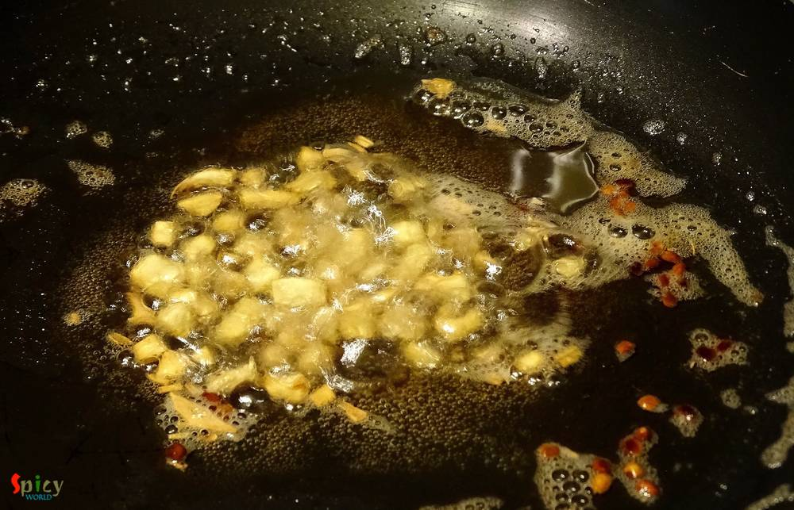
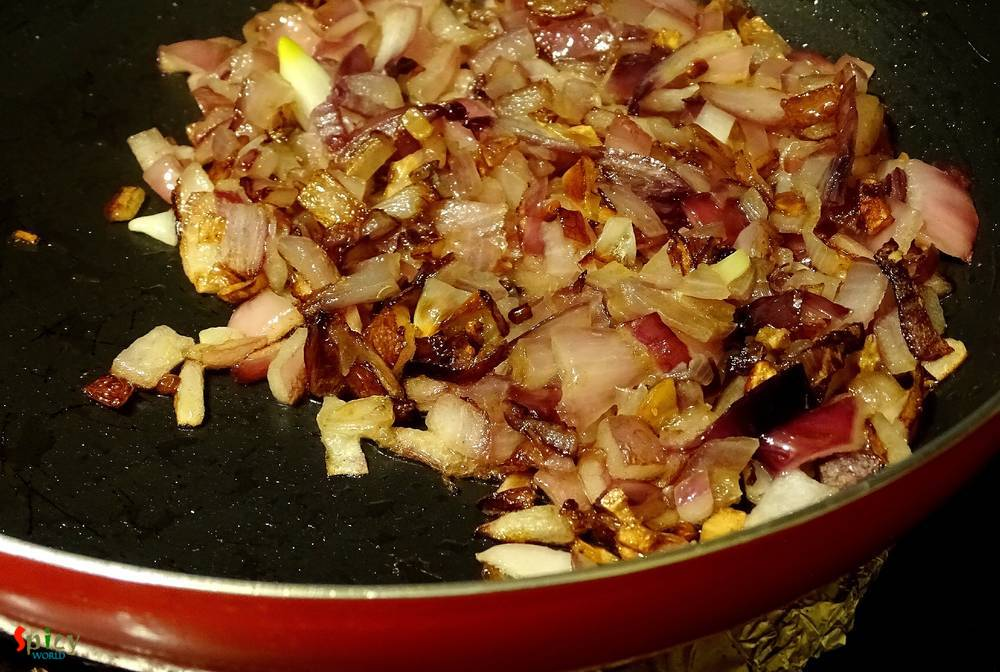
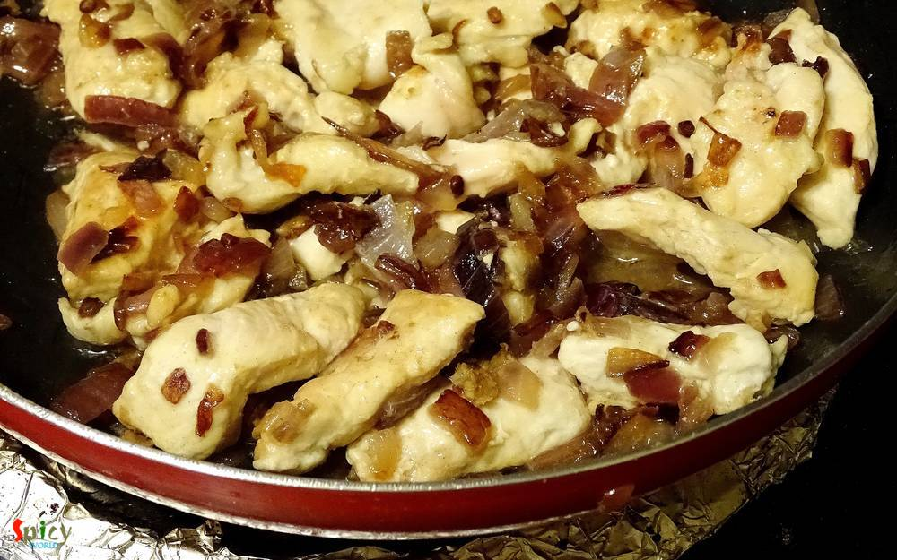
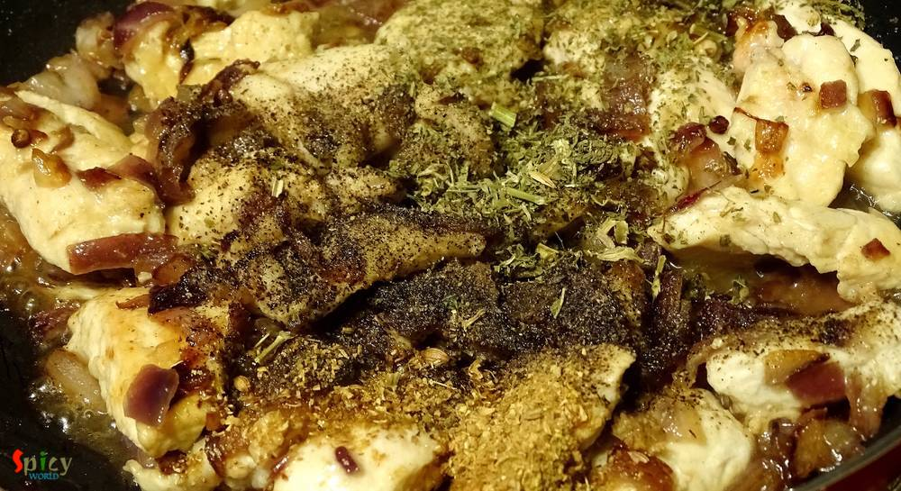
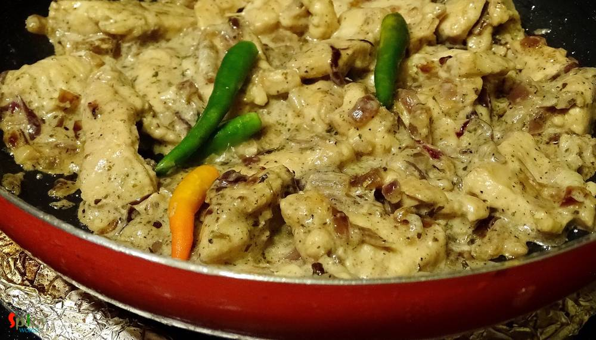
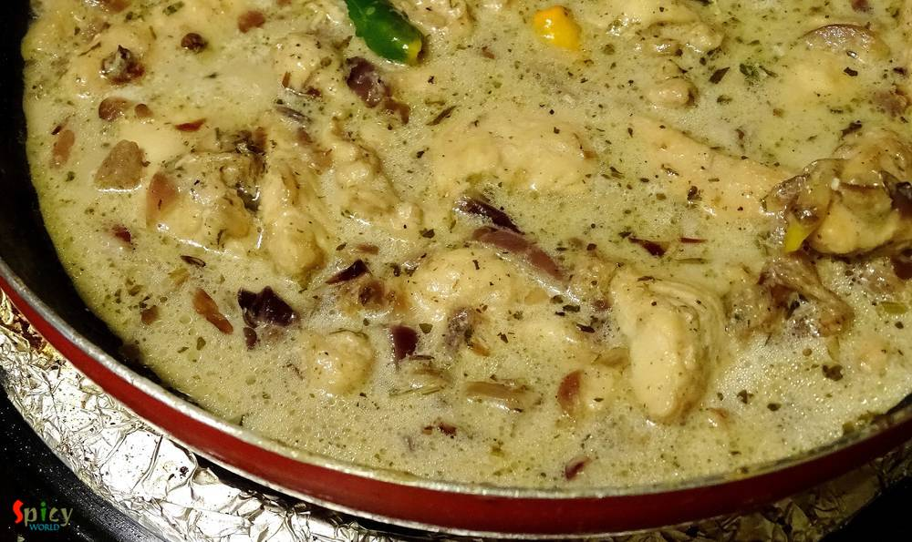
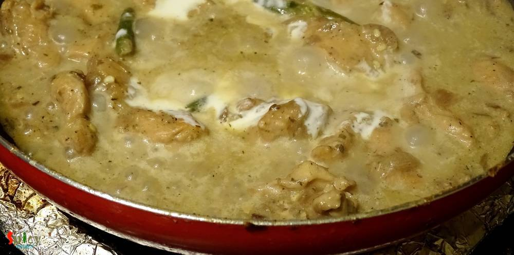
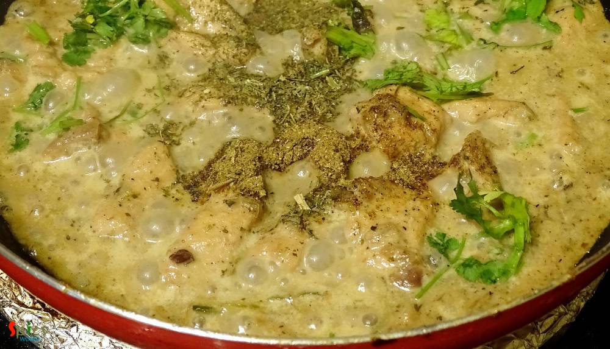
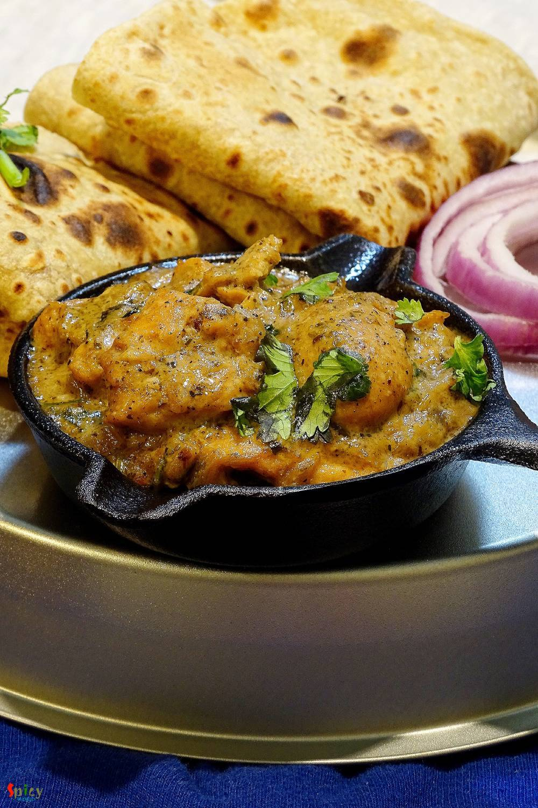
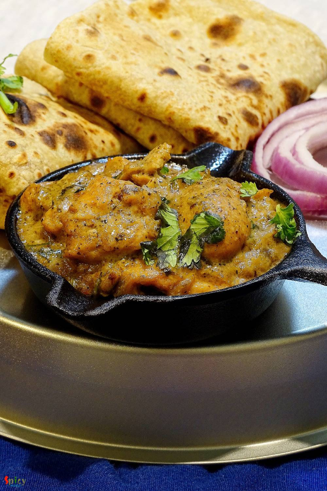

Simple and Easy Recipes
Murgh Methi Malai / Chicken cooked in creamy Fenugreek flavoured sauce
© 2016 Spicy World, Published on: May 10, 2016
This chicken curry belongs to the category of 'dhaba food'. The gravy is very popular in Punjab and all over India. You can also make this dish with paneer or vegetables. The white, creamy texture of the gravy and beautiful aroma of fenugreek leaves will take you to heaven. I used boneless chicken for this recipe, feel free to make it with chicken on bone, it will be no issue. You can pair this dish with plain chapatis, tandoori rotis or butter naan. Every pair will make your tummy happy. Try this easy recipe in your kitchen and enjoy a perfect dinner with your family.

Ingredients
- Half kg chicken, medium size pieces.
- 1 big onion, chopped.
- 1 Tablespoon of chopped ginger and garlic.
- 2 Tablespoons of heavy cream.
- 2 Tablespoons of curd.
- 1 Teaspoon of black / white pepper powder.
- 1 Tablespoon of dry fenugreek leaves.
- 1 Teaspoon of roasted coriander powder.
- Half Teaspoon of garam masala powder.
- Salt and sugar.
- 3 Tablespoons of oil.
- 1 Teaspoon of butter.
- A big pinch of fenugreek seeds.
- Warm water.
- Some chopped coriander leaves.
- 3 - 4 green chilies.


Steps
Heat the oil and butter in a pan.
Add fenugreek seeds into the hot oil. Saute till they become dark brown.

Then add chopped ginger and garlic. Saute for a minute.
Add chopped onion with some salt. Cook till it becomes translucent.
Now add the chicken pieces. Cook on high flame for 5 minutes.
Add black/ white pepper powder, coriander powder and half Tablespoon of dry fenugreek leaves. Mix well.
Lower the heat for few seconds and add curd, pinch of sugar and green chilies. Mix well for 4 minutes.
Add half cup of warm water and enough salt. Mix and cook until the chicken becomes tendor.
After that add the heavy cream. Mix well.
Lastly add remaining dry fenugreek leaves, garam masala powder and chopped coriander leaves. Give it a good mix and turn off the heat.
Let the curry rest for 5 minutes and then serve hot.
 
Your murgh methi malai is ready ...
Enjoy this hot with roti and salads ...
")